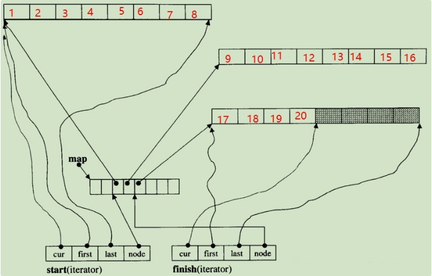

deque原理以及stack、queue、priority_queue模拟实现
容器适配器是对特定类封装作为其底层的容器，并提供一组特定的成员函数来访问其元素
stack底层可以用vector、deque、list默认使用deque
queue若使用vector来封装效率太低，所以底层可以用deque、list默认使用deque
priority_queue底层可以用vector和deque默认使用vector
deque:
与vector比较，头插效率高，不需要搬移元素，扩容时，也不需要搬移大量的元素
与list比较，空间利用率比较高，并且支持随机访问
deque有一个致命缺陷：不适合遍历，因为在遍历时，deque的迭代器要频繁的去检测其是否移动到某段小空间的边界，导致效率低下
stack和queue不需要遍历，只需要在固定的一端或者两端进行操作，stack中元素增长时，deque比vector的效率高（扩容时不需要搬移大量数据），queue中的元素增长时，deque不仅效率高，而且内存使用率高
deque采用指针数组map作为主控。每个元素指向另一段连续线性空间，称为缓冲区。缓冲区是deque的储存空间主体，如果map数组就再申请一块更大的连续空间供map数组使用，将原有数据（很多指针）拷贝到新的map数组中，然后释放旧的空间
deque的迭代器定义了四个指针，first和last指向缓冲区的首尾，cur指向当前遍历节点，node指向中控器中当前缓冲区是一个二级指针
图中begin()和end()分别返回start迭代器和finish迭代器
迭代器++时，cur往后走一位，当cur==last时，通过node访问下一个缓冲区的first并对cur重新赋值
迭代器–时，先判断cur是否为first，若为first则通过node访问上一个缓冲区的last，否则返回–cur
随机访问底层调用operator+，operator+再调用operator+=因此效率不高

模拟实现stack，queue，priority_queue:
1
2
3
4
5
6
7
8
9
10
11
12
13
14
15
16
17
18
19
20
21
22
23
24
25
26
27
28
29
30
31
32
33
34
35
36
37
38
39
40
41
42
43
44
45
46
47
48
49
50
51
52
53
54
55
56
57
58
59
60
61
62
63
64
65
66
67
68
69
70
71
72
73
74
75
76
77
78
79
80
81
82
83
84
85
86
87
88
89
90
91
92
93
94
95
96
97
98
99
100
101
102
| template <class T, class Con = std::deque<T>>
class Stack {
public:
Stack() {}
bool empty() const { return _c.empty(); }
size_t size() const { return _c.size(); }
T& top() { return _c.back(); }
const T& top() const { return _c.back(); }
void push(const T& x) { _c.push_back(x); }
void pop() { _c.pop_back(); }
private:
Con _c;
};
template <class T, class Con = std::deque<T>>
class Queue {
public:
Queue() {}
bool empty() const { return _c.empty(); }
size_t size() const { return _c.size(); }
T& front() { return _c.front(); }
const T& front() const { return _c.front(); }
T& back() { return _c.back(); }
const T& back() const { return _c.back(); }
void push(const T& x) { _c.push_back(x); }
void pop() { _c.pop_front(); }
private:
Con _c;
};
template <class T, class Con = std::vector<T>, class Compare = std::less<T>>
class Priority_Queue {
public:
Priority_Queue() {}
template <class Iterator>
Priority_Queue(Iterator first, Iterator last)
: c(first, last) {
for (int i = (c.size() - 2) / 2; i >= 0; i--) {
AdjustDown(i);
}
}
bool empty() const {
return c.empty();
}
size_t size() const {
return c.size();
}
const T& top() const {
return c.front();
}
void push(const T& data) {
c.push_back(data);
AdjustUP(c.size() - 1);
}
void pop() {
if (!empty()) {
std::swap(c.front(), c.back());
c.pop_back();
AdjustDown(0);
}
}
private:
void AdjustUP(int i) {
int parent = ((i - 1) / 2);
while (i && Compare()(c[parent], c[i])) {
std::swap(c[i], c[parent]);
i = parent;
parent = ((i - 1) / 2);
}
}
void AdjustDown(int parent) {
int child = parent * 2 + 1;
while (child < c.size()) {
if (child + 1 < c.size() && Compare()(c[child], c[child + 1])) {
child += 1;
}
if (Compare()(c[parent], c[child])) {
std::swap(c[child], c[parent]);
parent = child;
child = parent * 2 + 1;
continue;
}
return;
}
}
private:
Con c;
};
|